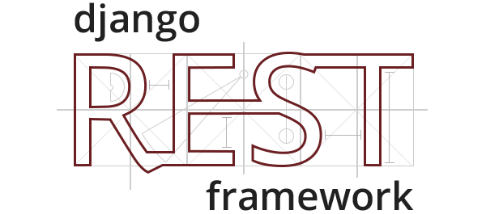
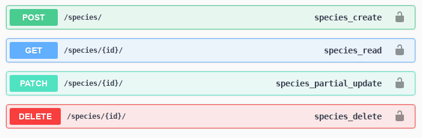
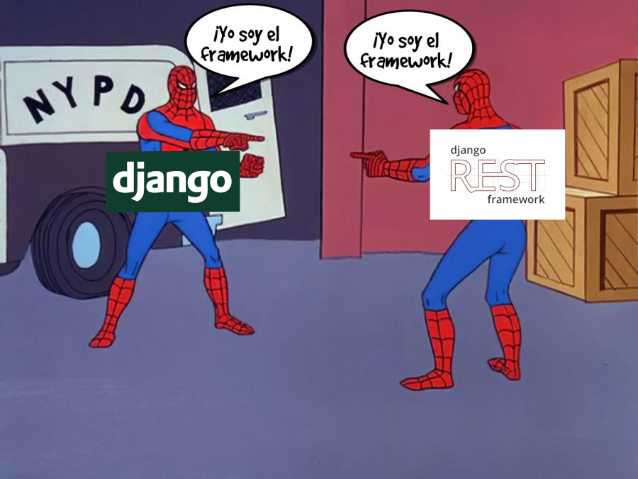
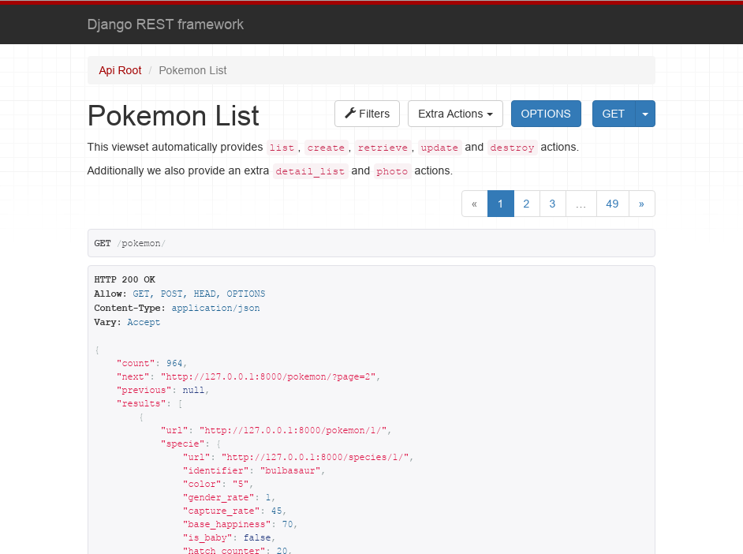
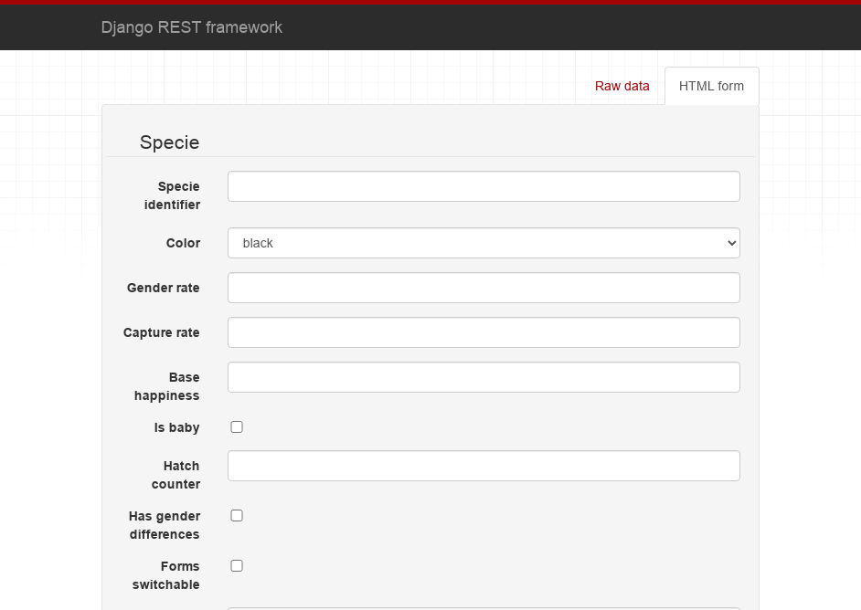
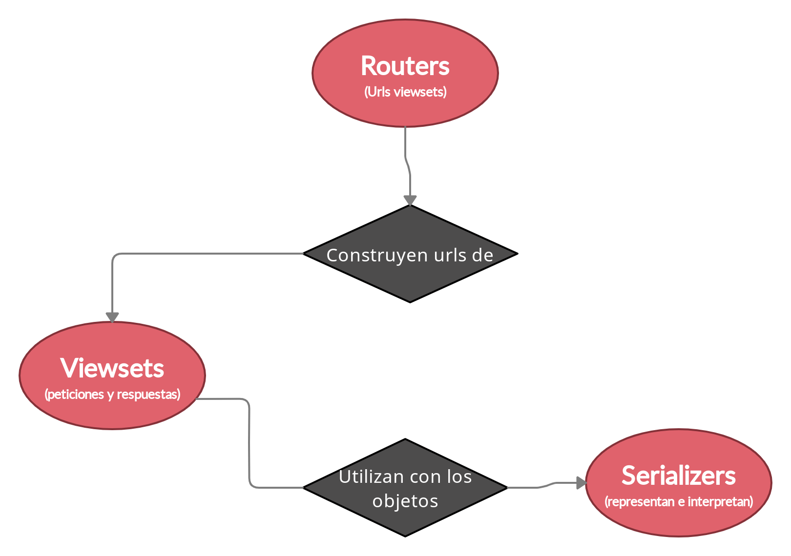
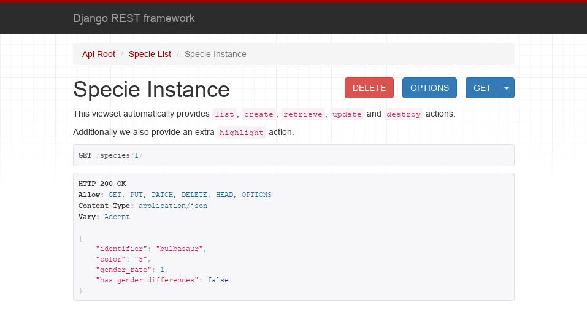
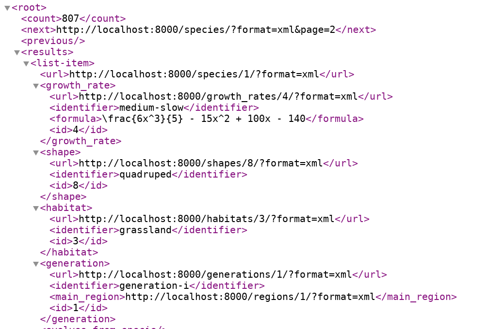

Construyendo APIs con Django Rest Framework
Sobre mí Nekmo

Django desde versión 1.1 (2009) |
Django + Django Rest Framework
Django
Qué es
Framework web.
Desarrollo rápido en Python.
Miles de módulos.
Muy escalable.
Gran soporte.
Baterías incluidas
{kind=link}
Qué incluye
ORM para base de datos.
Administración de sesiones.
Control de permisos
Gestión de urls.
Middleware.
Caché.
envío de correos...
Pero no API Rest.
Django Rest Framework
Framework para desarrollar APIs REST*
* API REST: Arquitectura de software que trabaja con los recursos mediante los operadores HTTP (POST, GET,
PUT, DELETE...).
Operadores HTTP
Respectivamente: Crear, obtener, actualizar y eliminar.
Meta framework
Antorchas
{kind=link}
Django Rest Framework complementa
Pastel 1
Pastel 2

Ejemplo web
Formulario
Características
Interpretar y renderizar a múltiples formatos.
Clases genéricas para facilitar operaciones CRUD.
Potentes serializers para trabajar con o sin el ORM.
Paginación, filtrado, búsqueda y ordenación en listados.
Compatible con los validadores y sistema de permisos de Django.
... entre otras opciones.
Estructura
Serializers
¿Qué son?
Los serializers, serializan
Nekmo, 2021.
Interpretar la entrada
{
"identifier": "bulbasaur",
"color": 5,
"gender_rate": 1,
"has_gender_differences": false
}Interpretar la entrada
# serializers.py
# --------------
class SpecieSerializer(serializers.HyperlinkedModelSerializer):
class Meta:
model = Specie
exclude = ()Interpretar la entrada
# models.py
# ---------
class Specie(models.Model):
identifier = models.CharField(_('Specie identifier'), max_length=50)
color = models.CharField(max_length=8, choices=COLORS)
gender_rate = models.SmallIntegerField()
has_gender_differences = models.BooleanField()Interpretar la entrada
# serializers.py
# --------------
class SpecieSerializer(serializers.HyperlinkedModelSerializer):
identifier = serializers.CharField()
color = serializers.ChoiceField(choices=COLORS)
gender_rate = serializers.IntegerField()
has_gender_differences = serializers.BooleanField(default=False)
class Meta:
model = Specie
exclude = ()Devuelve la salida
Viewsets
Lógica encargada de procesar las peticiones de la API para trabajar con los objetos para:
Crearlos
Listarlos
Actualizarlos
Obtenerlos
Eliminarlos...
Ejemplo viewset
class SpecieViewSet(viewsets.ViewSet):
"""A simple ViewSet for listing or retrieving species."""
def list(self, request):
queryset = Specie.objects.all()
serializer = SpecieSerializer(queryset, many=True)
return Response(serializer.data)
def retrieve(self, request, pk=None):
queryset = Specie.objects.all()
user = get_object_or_404(queryset, pk=pk)
serializer = SpecieSerializer(user)
return Response(serializer.data)Ejemplo viewset
class SpecieViewSet(viewsets.ModelViewSet):
"""
This viewset automatically provides `list`, `create`, `retrieve`,
`update` and `destroy` actions.
Additionally we also provide an extra `photo` action.
"""
queryset = Specie.objects.select_related('growth_rate', 'shape', 'habitat')
serializer_class = SimpleSpecieSerializer
filter_class = SpecieFilter
ordering_fields = ('identifier', 'generation', 'evolves_from_specie', 'color')
search_fields = ('identifier', 'generation__identifier', 'shape__identifier')
@action(detail=True)
def photo(self, *args, **kwargs):
obj = self.get_object()
photo_url = PHOTO_FORMAT_URL.format(**vars(obj))
return Response(headers={'Location': photo_url},
status=status.HTTP_302_FOUND)Filtrado y paginación
filter_class = SpecieFilter
ordering_fields = ('identifier', 'generation', 'evolves_from_specie', 'color')
search_fields = ('identifier', 'generation__identifier', 'shape__identifier'){kind=link}
Filtrado y paginación
from django_filters.rest_framework import FilterSet
class SpecieFilter(FilterSet):
class Meta:
model = Specie
fields = {
'identifier': ['exact', 'icontains'],
'generation': ['exact', 'in'],
}Parsers y renderers
También se encarga de definir:
Los parsers (leen e convierten la petición) para luego interpretarse y validarse con los serializers.
Los renderers (devuelven al usuario la respuesta) a partir del data del serializer.
Algunos formatos: json (por defecto), xml, yaml, csv...
Parsers y renderers
Opciones por defecto
# settings.py
# -----------
REST_FRAMEWORK = {
'DEFAULT_PAGINATION_CLASS': 'rest_framework.pagination.PageNumberPagination',
'PAGE_SIZE': 20,
'DEFAULT_AUTHENTICATION_CLASSES': [
'rest_framework.authentication.TokenAuthentication',
'oauth2_provider.contrib.rest_framework.OAuth2Authentication',
]
'DEFAULT_PERMISSION_CLASSES': [
'rest_framework.permissions.IsAuthenticated',
]
'DEFAULT_RENDERER_CLASSES': (
'rest_framework_xml.renderers.XMLRenderer',
),
'DEFAULT_FILTER_BACKENDS': (
'django_filters.rest_framework.DjangoFilterBackend',
),
}Otras opciones viewsets
Caché respuesta.
Documentación.
Limitar las peticiones (Throttling).
... y más.
Vamos terminando
Routers
# routers.py
# ----------
router = DefaultRouter()
router.register(r'pokemon', viewsets.PokemonViewSet)
router.register(r'species', viewsets.SpecieViewSet)
router.register(r'growth_rates', viewsets.GrowthRateViewSet)
router.register(r'shapes', viewsets.ShapeViewSet)
router.register(r'habitats', viewsets.HabitatViewSet)
router.register(r'generations', viewsets.GenerationViewSet)
router.register(r'regions', viewsets.RegionViewSet)Urls
# urls.py
# -------
urlpatterns = [
url(r'^', include(router.urls)),
path('docs/', include_docs_urls(title='Pokédex'))
]En resumen
Serializers: representan e interpretan los datos.
Viewsets: gestionan las peticiones y devuelven la respuesta.
Routers: corresponde a las urls que se utilizarán.
¿Y no podríamos reducirlo?
{kind=link}
Heredar serializers
class SimpleSpecieSerializer(serializers.HyperlinkedModelSerializer):
class Meta:
model = Specie
exclude = ('growth_rate', 'shape', 'habitat', 'generation')
class SpecieSerializer(SimpleSpecieSerializer):
class Meta(SimpleSpecieSerializer.Meta):
exclude = ()Condicionar serializer
class SpecieViewSet(viewsets.ModelViewSet):
"""
This viewset automatically provides `list`, `create`, `retrieve`,
`update` and `destroy` actions.
"""
queryset = Specie.objects.select_related('growth_rate', 'shape')
serializer_class = SpecieSerializer
def get_serializer_class(self):
if self.action == 'retrieve':
return DetailPokemonSerializer
return super().get_serializer_class()Anidar serializers
class GrowthRateSerializer(serializers.HyperlinkedModelSerializer):
class Meta:
model = GrowthRate
exclude = ()
class SpecieSerializer(SimpleSpecieSerializer):
growth_rate = GrowthRateSerializer() # nested serializer
class Meta(SimpleSpecieSerializer.Meta):
exclude = ()Otros módulos
djoser (Registro y autenticación usuarios).
django-oauth-toolkit (OAuth2).
drf-yasg (Swagger).
drf-nested-routers (Routers anidados)
rest-pandas (Excel, CSV y SVG renderers).
drf-extensions (extensiones varias).
Demo
Pikachu
¡Muchas gracias!
Referencias
¿Y la presentación?
Vuelve a verla, prueba la demo y mira el código fuente en:
Contactar
Sitio web: nekmo.com
Email: contacto@nekmo.com
Twitter: @nekmocom
Telegram: @nekmo
Jabber: nekmo@nekmo.org
{kind=link}